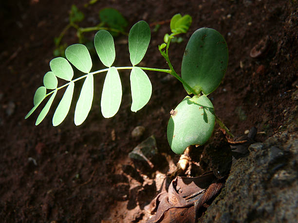

Plant Lighting Guidelines

Indoor Plants
- Understanding Light Needs: Different indoor plants have varying light requirements. Know the specific needs of your plants, whether they prefer bright, indirect light or low-light conditions.
- Placement: Position indoor plants near windows with suitable light levels. Rotate plants regularly to ensure all sides receive adequate light.
- Supplemental Lighting: Consider using artificial lights, such as fluorescent or LED grow lights, for plants that require more light than your indoor space provides.
- Monitor Duration: Pay attention to the duration of light exposure. Some plants need a certain number of hours of light each day for optimal growth.
Outdoor Plants
- Sun Requirements: Understand the sunlight requirements of your outdoor plants. Some prefer full sun, while others thrive in partial shade or full shade.
- Plant Placement: When planting outdoor plants, consider the direction of sunlight and plant accordingly. Place taller plants where they won't shade shorter ones excessively.
- Soil and Light: Ensure that the soil in your outdoor garden allows proper drainage and is suitable for the light requirements of your plants.
- Protect from Extreme Conditions: Protect sensitive plants from harsh sunlight or extreme temperatures. Provide shade during peak sun hours if needed.